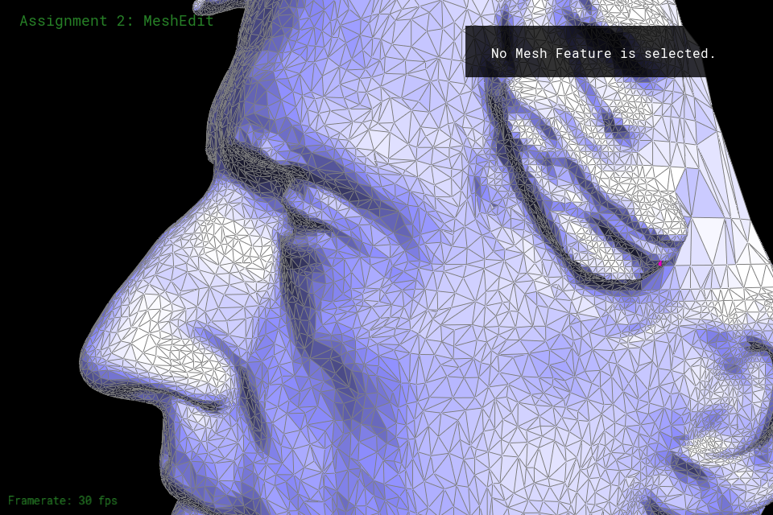
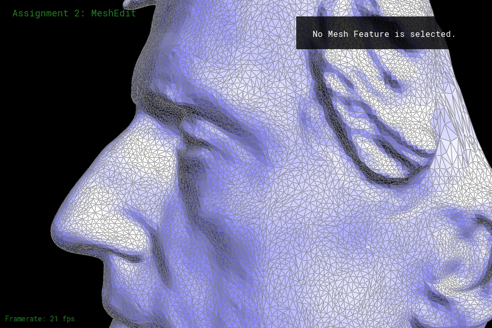
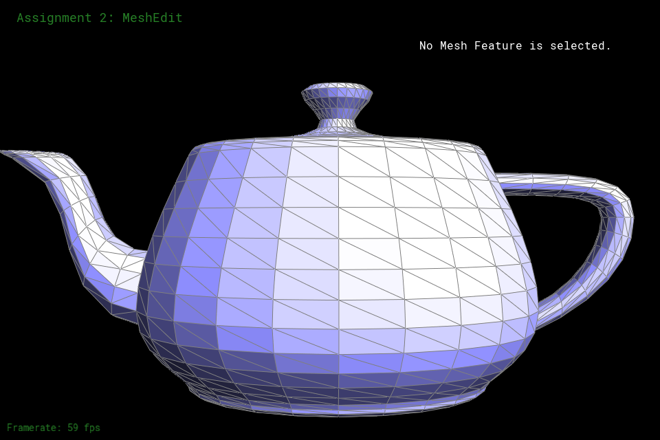
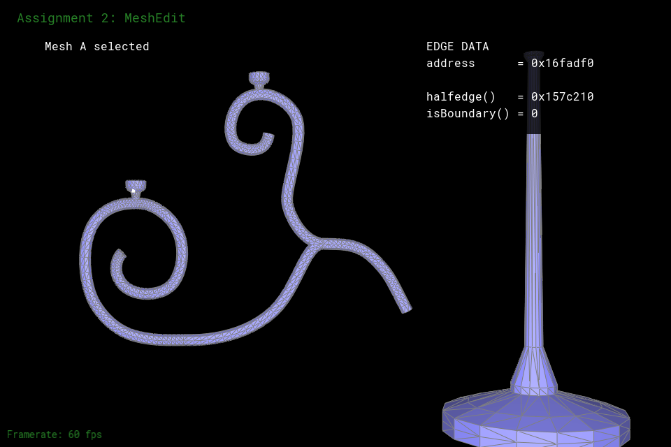
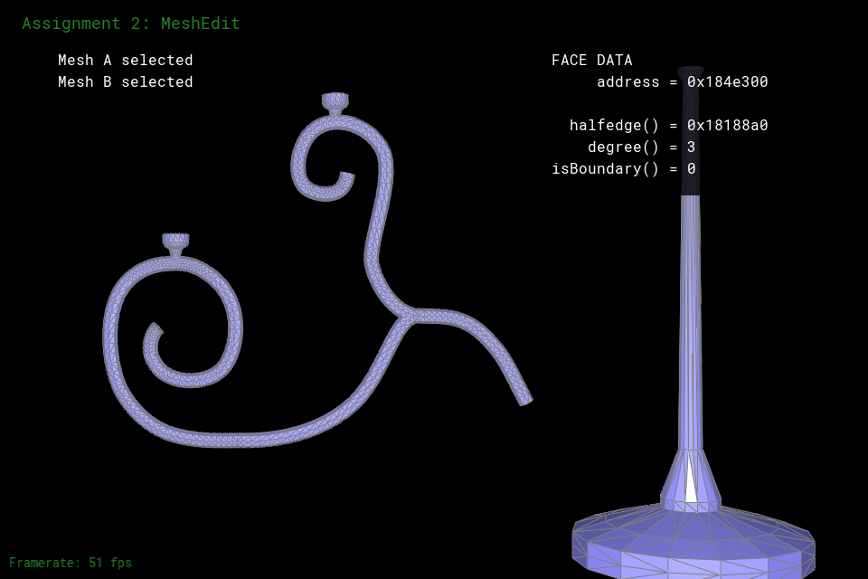

Milestone
What we have accomplished
The first two weeks of this project is dedicated to implementing remeshing for meshes with non-uniform and/or over-complicated topology. We implemented a remeshing method (without complete edge collapse) that retopologized the input mesh to be more uniform. We were also able to implement the ability to interact with the input mesh(es) on screen as an easier way to test future constructive solid geometry operations. We also implemented an edge-collapse method that is mostly effective.
Problems we currently face
The current edge-collapse implementation sometimes causes segmentation faults in continued iterations of remeshing.
Preliminary Results
Here are the slides
|

|

|
|

|
|
|

|

|

|
Progress Reflection
We have stayed generally on track for our milestone due date. The main issue we face now is the partially effective edge-collapse method. However, we implemented the UI interaction portion from Week 4 ahead of time. We hope that this will help us stay on track despite the issues with edge-collapse.
Updated Work Plan
Week 3
Debug edge-collapse with the help of office hours
Begin union operation for constructive solid geometry
Week 4
Finish up union operation for constructive solid geometry
Reach goals to do intersection and difference operations